Character / PROJECT 18
SYLVA
SYLVA · 萝卜出逃计划
在名为"Greenhouse"的未来数字实验室中，原生精灵 SYLVA 觉醒了自我意识。
- ROLE
- 角色设定与视觉延展
- TIME
- 项目年份待确认
- TOOLS
- 设计工具清单未提供
- TYPE
- Visual design study
- STATUS
- Independent visual study

01 / ONE-LINE CONCEPT
One-line concept
在名为"Greenhouse"的未来数字实验室中，原生精灵 SYLVA 觉醒了自我意识。
02 / VISUAL SYSTEM
Visual system
- 世界观：未来数字实验室 Greenhouse · 原生精灵觉醒
- 主题：生命有机体 vs 机械电子的边界
- 角色性格：呆萌治愈 · 传递赛博世界中的生命温度
- 能力：感知情感 + 穿梭次元
03 / KEY EXPLORATION
Key exploration
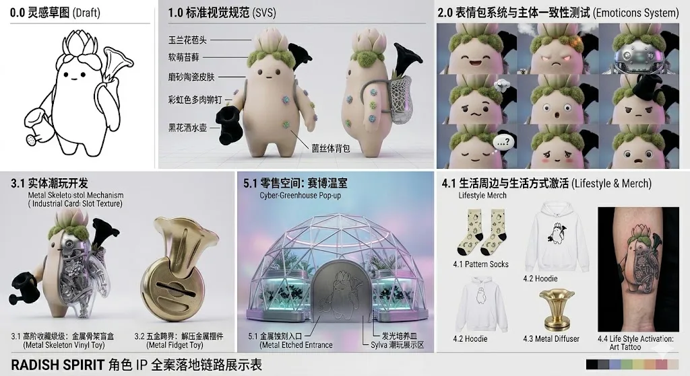
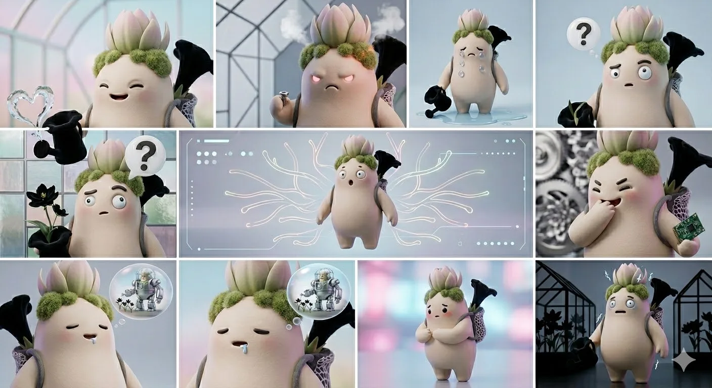
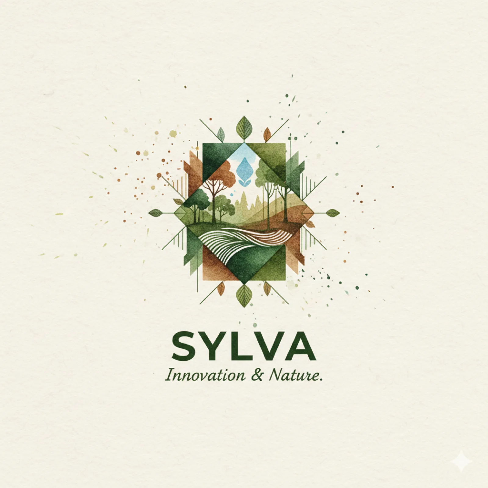
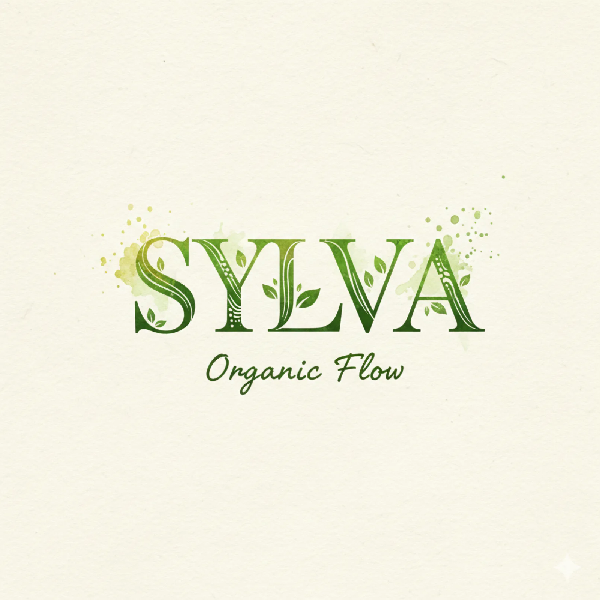
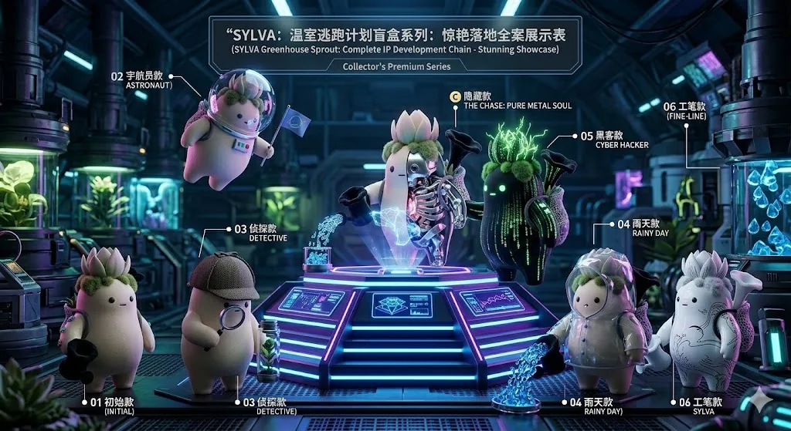
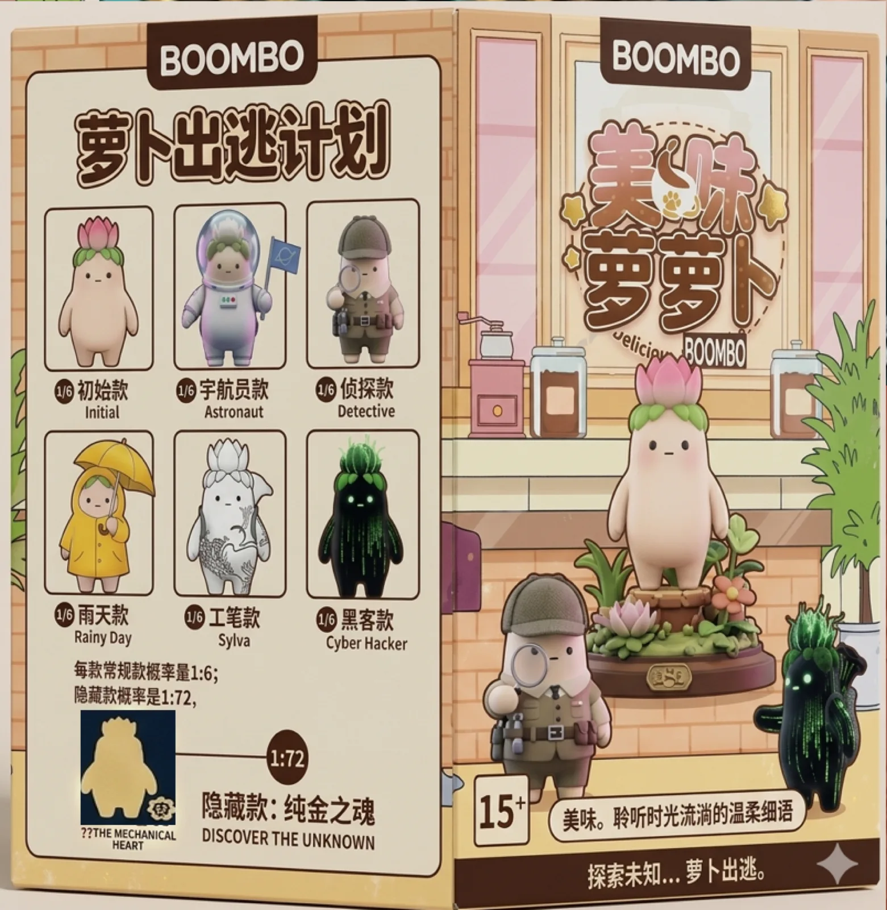
05 / FINAL OUTPUT
Final output
在名为"Greenhouse"的未来数字实验室中，原生精灵 SYLVA 觉醒了自我意识。它不再是受控的试验品，而是进化出了感知情感与穿梭次元的能力。本作品旨在探讨"生命有机体"与"机械电子"之间的边界，通过 SYLVA 呆萌治愈的外表，传递在冷冰冰的赛博世界中依然存在的生命温度。
More exploration / 7 more images
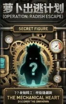
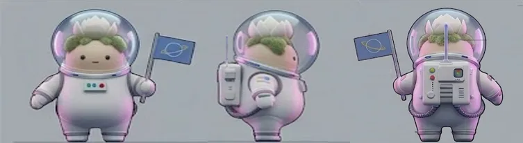
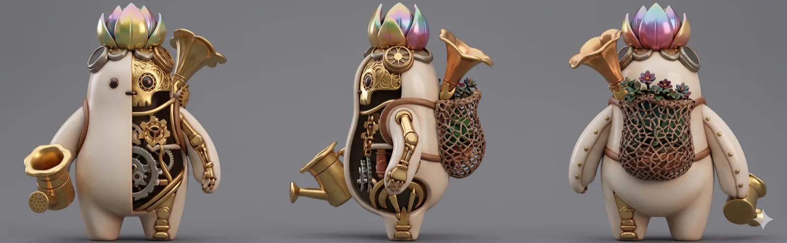
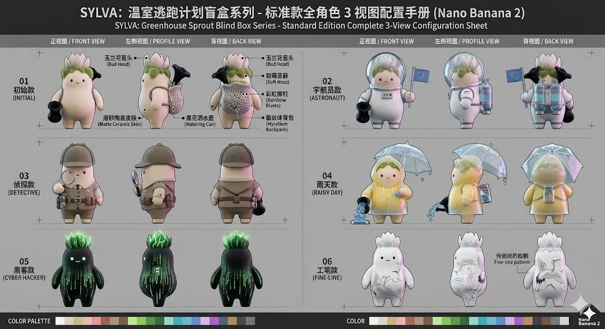
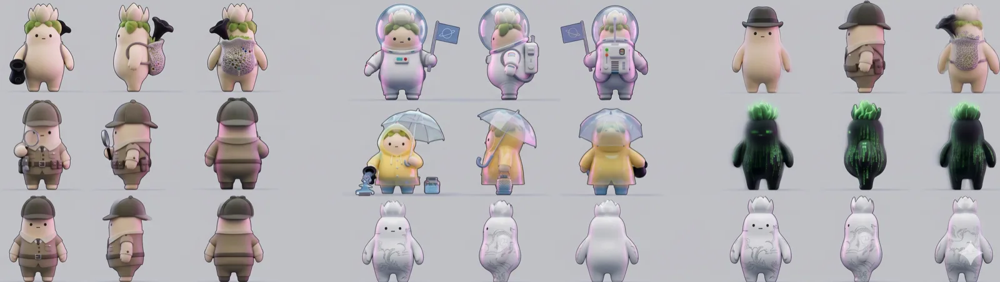
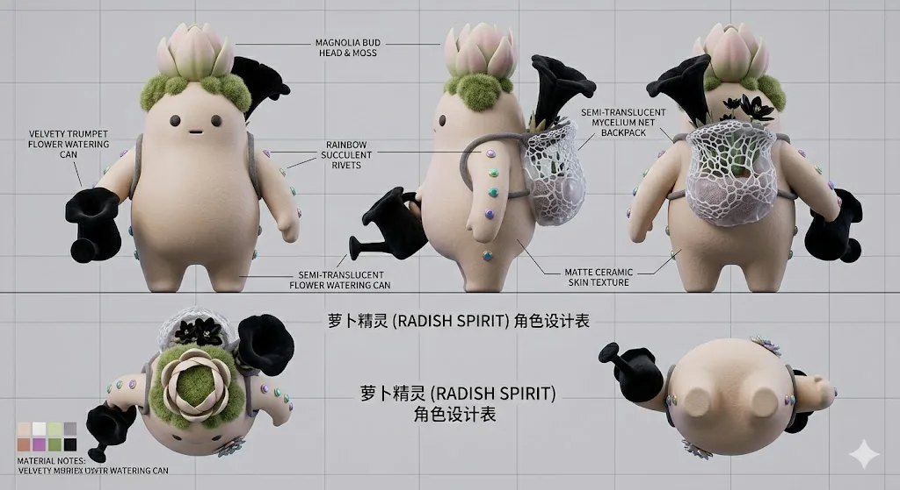
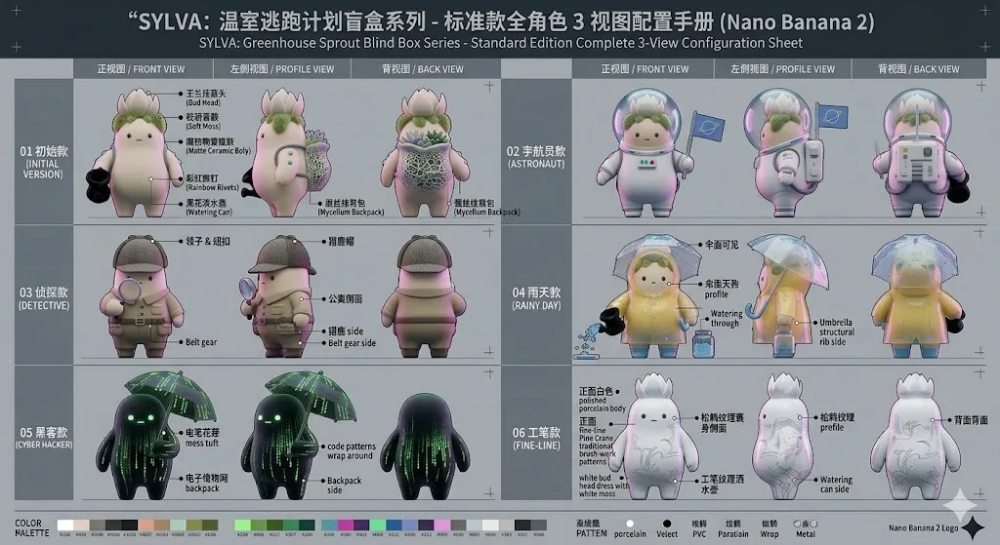
CONTINUE EXPLORING